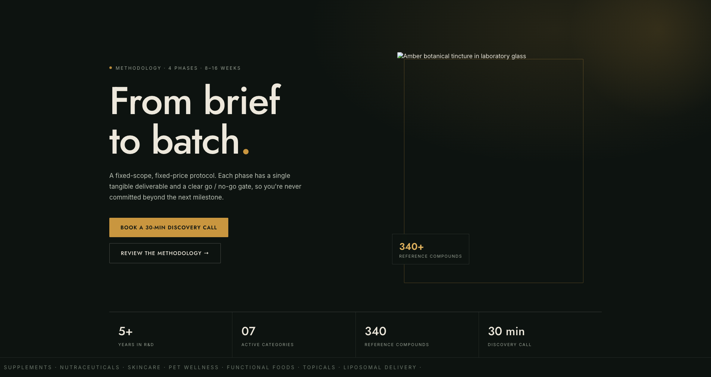
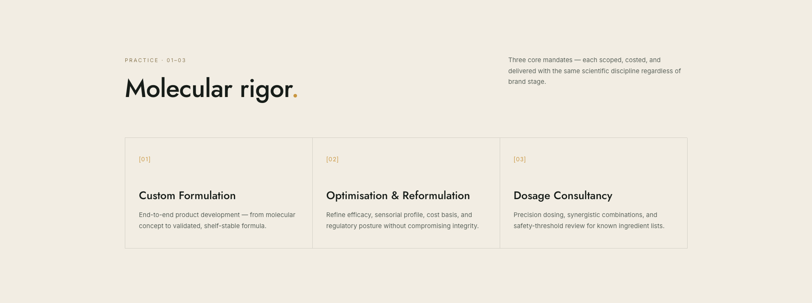
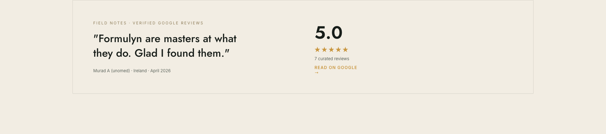
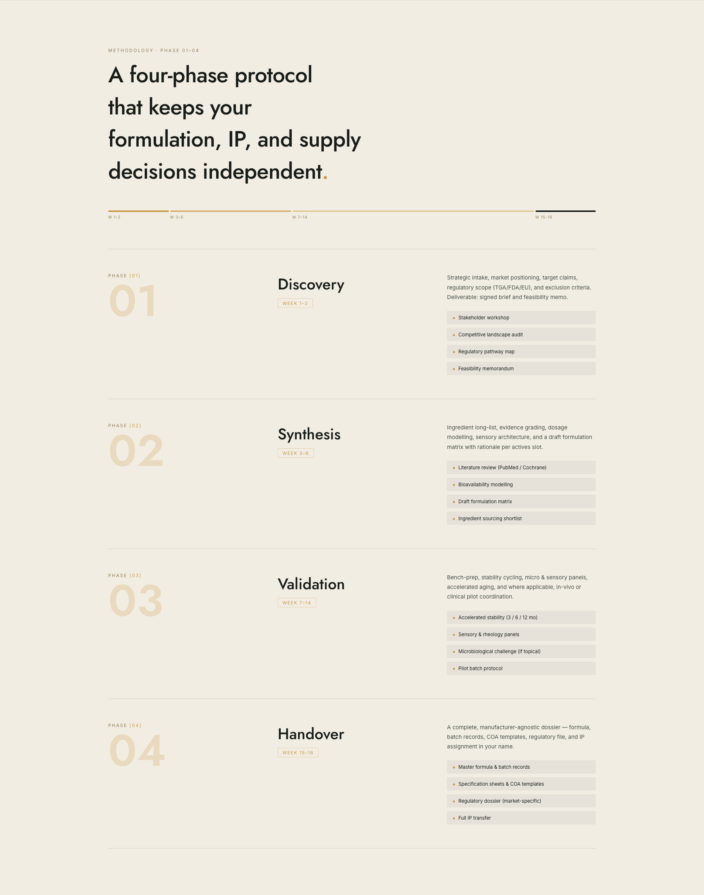
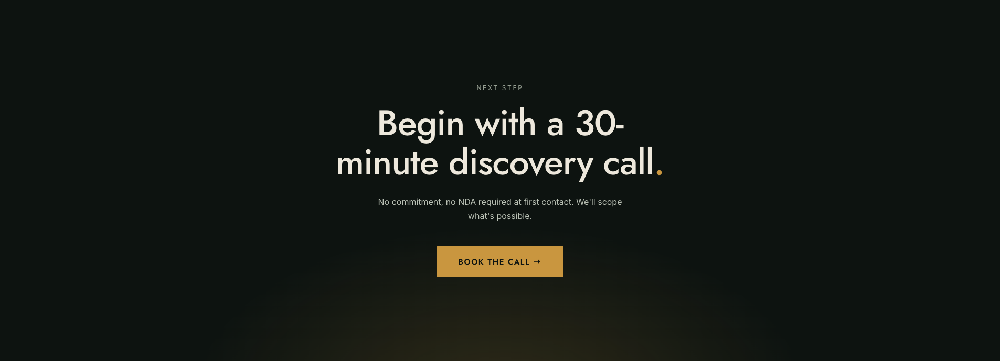
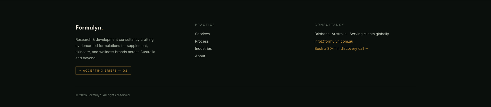

Formulyn.
August 2026 · Confidential
Initial Concept · For Client Review
Website redesign.
A refined, modern evolution of the Formulyn brand — elegant, premium, and futuristic, built around the four-phase methodology from brief to batch.
Evidence-led Product Formulation R&D
formulyn.com.au
Design Direction
Refined, evidence-led, futuristic.
02
Palette
Lab Green-Black
#0D1310
#0D1310
Amber
#C9963F
#C9963F
Parchment
#F2EDE3
#F2EDE3
Sage Grey
#9AA396
#9AA396
Principles
- Existing brand evolved, not replaced — amber botanical palette retained
- Copy kept verbatim; hierarchy and structure improved
- Hairline rules, sharp corners, oversized phase numerals
- Subtle motion: scroll reveals, pulsing status dots, category marquee
- Fully responsive — desktop, tablet, mobile
Typography
AaBbCc 0123
Century Gothic (Jost web fallback) — display & headings
AaBbCc 0123
Inter — body, labels & UI
Typographic pairing per the supplied brand guide: geometric display over a highly legible grotesque, set with wide-tracked uppercase labels.
Concept · Desktop
Hero — from brief to batch.
03


Dark laboratory tone with amber glow, pulsing protocol status, key metrics strip, and a scrolling category marquee. Primary CTA: book a 30-minute discovery call.
Concept · Desktop
Practice & client proof.
04


Concept · Desktop
Methodology — four phases.
05

Notes
A week-proportional timeline bar visualises the 16-week protocol at a glance.
Each phase: oversized numeral, week badge, description, and four deliverable chips — content verbatim from the current site.
Sections reveal on scroll with a soft rise animation.
Concept · Desktop
Conversion & footer.
06


Next: feedback round → responsive build-out of remaining pages
Formulyn · Initial Concept